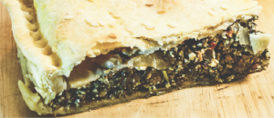

Receta de tarta de verdura

Tarta de verdura

Tiempo de preparación: 95'
minutos
Dificultad: Difícil
Ingredientes
Para la masa:
- 250 gr harina 0000
- 1 cucharada aceite de oliva
- 40 gr margarina o aceite de coco
- 1/2 cucharadita de sal marina
- 1/2 cucharadita de cúrcuma en polvo
- agua fría cantidad necesaria
Para el relleno:
- 2 atados espinaca o acelga
- 2 cebolla
- 1 diente de ajo
- aceite de Oliva cantidad necesaria
- 1 cucharadita ají molido
- sal y pimienta a gusto
- el bagazo de la leche de almendras condimentado con levadura nutricional
- queso de papa
- tofu revuelto
Elaboración paso a paso
Para la masa:
- Tamizar la harina, la sal y la cúrcuma.
- Disponer la mezcla en la mesada en forma de corona y en el centro colocar el aceite y margarina a temperatura ambiente.
- Unir los ingredientes del centro incorporando la harina y agregar agua fría de a poco hasta formar un bollo tierno.
- Amasar hasta formar una masa bien elástica y dividir la masa en dos bollos. Dejarlos descansar en la heladera cubiertos con film mientras preparamos el relleno.
Para el relleno:
- Lavar bien las hojas de espinaca y saltearlas con un poco de aceite de oliva en una sartén grande. Reservar.
- Picar el ajo y la cebolla y saltearlos también.
- Picar la espinaca salteada y unir con la cebolla y el ajo. Condimentar con ají molido, sal y pimienta a gusto.
- Agregar el bagazo de la leche de almendras previamente condimentado con levadura nutricional, el queso de papa y el tofu revuelto.
Para el armado:
- Retirar los bollos de masa de la heladera y estirarlos con palote.
- Aceitar y enharinar una tartera y colocar un disco de masa para forrarla. Pinchar con un tenedor y agregar el relleno.
- Colocar el otro disco por encima, como una tapa y unir los bordes formando un repulgue y sellando la tarta.
- Pinchar la superficie con tenedor y llevar a horno moderado a fuerte previamente precalentado.
- Cocinar hasta que se dore